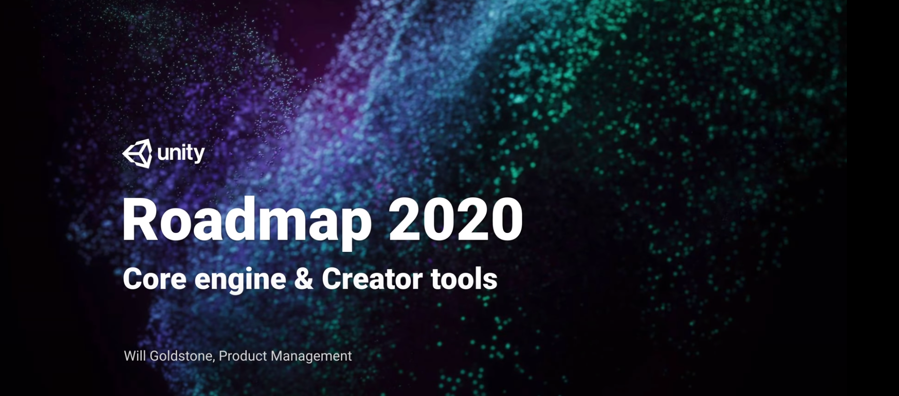 路线图专注从以下四个方面说明
- 可靠性和性能
- 创作工作流
- 拓展性
- 抓住用户
产品将以三个版本进行展示
- 正式版
- 预览版
- 开发版
可靠性和性能
放缓了发布频率和数量，提高稳定性和产品质量，unity的技术方向专注在一些新的技术领域如SRPs,DOTS,UIElemenmts
产品定位
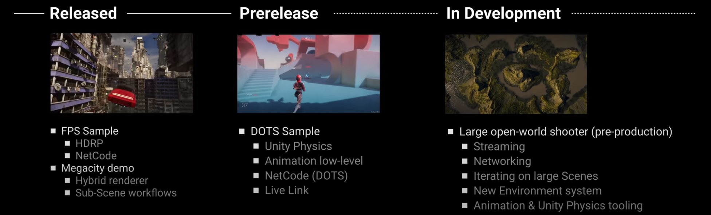
Released
《FPS Sample Game》,《Megacity》unity的大城市demo
- FPS Sample
- HDRP(高清渲染管线)
- NetCode（DOTS项目网络模型，包含的网络代码提供了客户端预测、授权服务器和插值功能，让创建网络 FPS 游戏变得更加容易）
- Megacity demo
- Hybrid renderer（提供使用DOTS绘制网格的系统和组件，包括对实例网格渲染和LOD的支持）
- Sub-Scene workflows
Prerelease
DOTS sample —- a third-person networked game,展示了NetCode和大量新的DOTS强大的特性例如Unity Physics
- DOTS Sample
- Unity Physics（DOTS物理系统）
- Animation low-level
- NetCode(DOTS网络模型)
- Live Link（实时真机调试，保存场景就会直接推送给正在运行的设备）
In Development
一个大型开放世界射击游戏，其中涉及我们最新的环境系统和大量DOTS-powered特性
- Large open-world shooter(pre-production)
- Streaming
- Networking
- Iteration on large Scenes
- New Environment system
- Animation & Unity Physics tooling
包管理
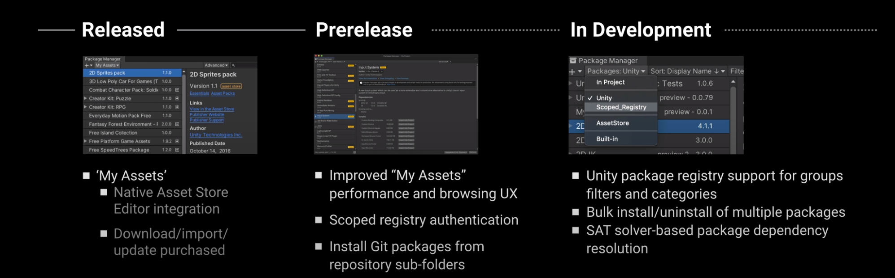
Released
统一编辑器内包管理体验以提供原生商店-我的资源的支持
- 我的资源
- 整合了原生编辑器商店
- 下载，导入，升级，购买
Prerelease
编辑器内我的资源，将有更棒的性能和浏览体验，支持拓展自定义包工作流，支持npm域注册和git仓库子目录
- 改善我的资源性能和浏览用户体验
- 资料库域的验证
- 通过住git仓库的子文件夹安装
In Development
改善大规模包管理体验
- unity包资料库支持组过滤和分类
- 大量安装和卸载多个包
- 基于SAT解释器的包依赖的解决方案
分析和性能优化
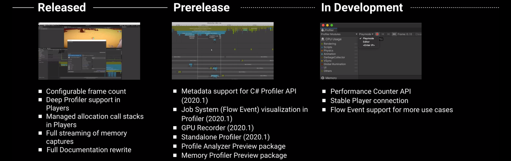
Released
在过去的一年中，在性能分析器上投入更多精力
Prerelease
升级内存性能分析工具，更快，更稳定，开销更小，添加元数据，分析作业系统，文档也做了全面的更新
In Development
支持自定义runtime counters
创意工作流
2D
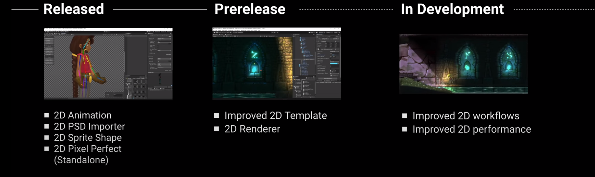
Released
多样的世界构建方式支持，支持PSD分层文件，cinemachine支持更好的像素渲染
- 2D Animation
- 2D PSD Importer
- 2D Sprite Shape
- 2D Pixel Perfect(Standalone)
Prerelease
2D模板项目，提升2d渲染，并将通用渲染管线作为标准，2d光照，阴影，辅助纹理和Shader Graph支持的更好
- Improved 2D Template
- 2D Renderder
In Development
更稳，更强
- Improved 2D workflows
- Imporved 2d performance
像《奥日》一样
程序
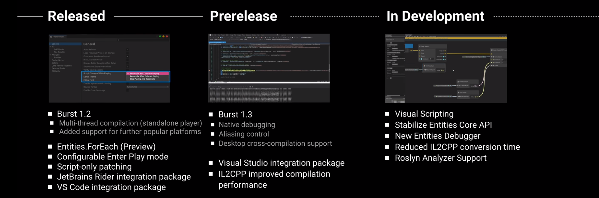
Released
可配置Play mode，减少迭代时长，Burst Compiler,未来平台支持
- Burst 1.2
- 多线程编译（standalone player）
- 新平台支持
- Entities.ForEach 实体遍历
- 可配置Enter Play mode
- 脚本补丁
- JetBrains Rider 集成包
- VS code 集成包
Prerelease
Burst Compiler作为开发工具支持原生调试
- Burst 1.3
- 原生调试
- 混淆控制
- 桌面交叉编译支持
- Visual Studio 集成包
- IL2CPP 改进编译体验
In Development
Visual Scripting，可视化编程
- Visual Scripting
- 稳定的Entities Core API
- New Entities Debugger
- 减少IL2CPP 转换时间
- Roslyn Analyzer 支持
编辑器
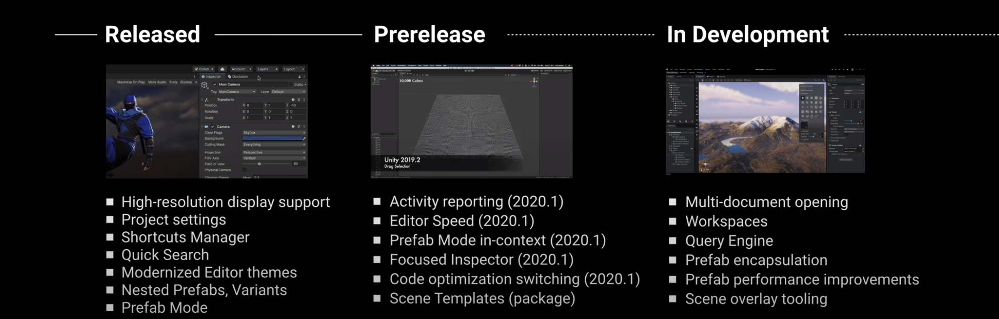
Released
新主题，快捷定制化管理支持
- 高分辨率支持
- 项目设置
- 快捷管理
- 快速搜索
- 现代化主题
- 嵌套预制体，变体
- 预制体模式
Prerelease
编辑器选择管理优化，大规模预制体编辑，新的预制体编辑视图
- Activity reporting
- Editor Speed
- Prefab Mode in-content
- Focused Inspector
- Code optimization switching
- Scene Templates
In Development
全新的工作流，全新的面板和编辑窗口
- Multi-document opening
- WorkSpaces
- Query Engine
- Prefab encapsulation
- Prefab performance improvement
- Scene overlay tooling
生活品质的改善
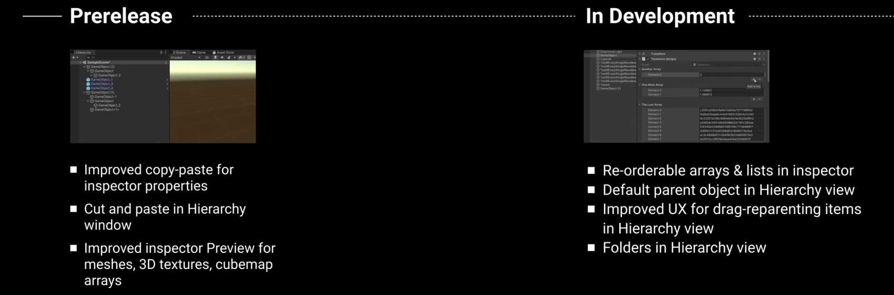
Prerelease
多处copy paste 体验修改
- 属性面板的copy-paste
- 层级树的剪切粘贴
- 改善材质，3D纹理和立方图的属性面板预览
In Development
- 属性面板，重排序数组
- Default parent object in Hierarchy view
- 改善层级树拖放体验
- 层级数支持文件夹（组，替代之前使用一个空的实体来管理）
动画
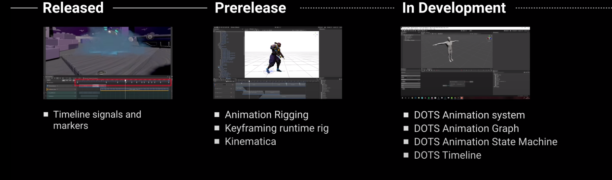
Released
简单的可视化界面创建和管理timeline事件
- Timeline通知和标记
Prerelease
Animation Rogging，KeyFraming Runtime Rig，Kinematica
- Animation Rigging
- KeyFraming Runtime Rig
- Kinematica
In Development
DOTS Animation 全家桶
- DOTS Animation system
- DOTS Animation Graph
- DOTS Animation State Machine
- DOTS Timeline
Ligting 光照
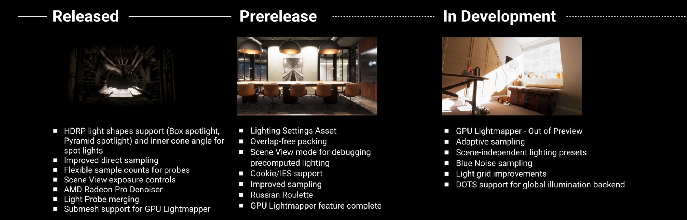
Released
改善HDRP对预算光照的支持，改善聚光灯，新的盒灯和金字塔灯，提升复杂光照质量
- HDRP light support and inner cone angle for spotlights
- Imporved direct sampling
- Fiexible sample counts for probes
- Scene View exposure controls
- AMD Radeon Pro Denoiser
- Light Probe merging
- Submesh support for GPU Lightmapper
Prerelease
单独的场景光设置，便于复用，Overlap Free Packing，新的场景查看模式以便确认你的设置，Cookie.IES light emitter and many GPU Lightmapper features
- Lighting Settiong Assets
- Overlap-free packing
- Scene View mode for debugging precomputed lighting
- Cookie/IES support
- Russian Roulette
- GPU Lightmapper feature complete
In Development
- GPU Lightmapper -Out of Preview
- Adaptive sampling
- Scene-independent lighting presets
- Blue Noise sampling
- Light grid improvements
- DOTS support for global illumination backend
World-building
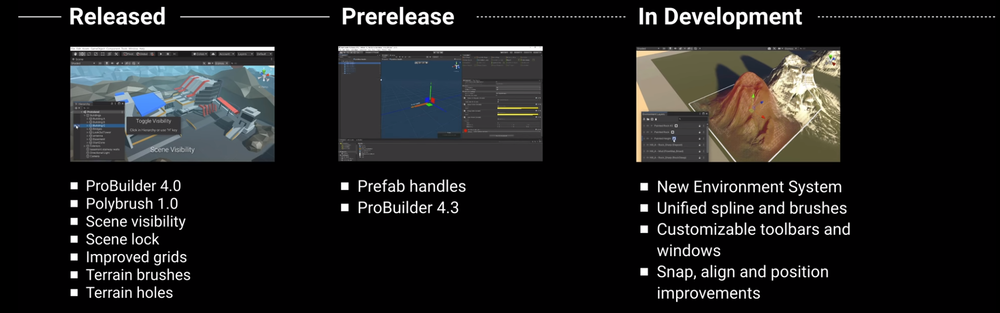
Released
ProBuilder 和 Polybrush，新的地形工具
- ProBuilder 4.0
- Polybrush 1.0
- Scene visibility
- Scene lock
- Imporved grids
- Terrain brushed
- Terrain holes
Prerelease
统一的操作和体验
- Prefab handles
- ProBuilder 4.3
In Development
改善操作体验，基于C#的环境系统，为ProBuilder和Polybrush添加高级特性
- New Environment System
- Unified spline and brushes
- Customizable toolbars and windows
- Snap,align and position improvements
Visial Effects 视觉效果
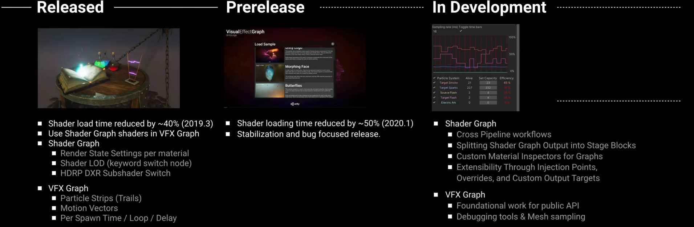
Released
在visual effects中使用shader graphs，visual effect graph预览
- shader load time reduced by 40%
- Use Shader Graph shaders in VFX Graph
- Shader Graph
- Render State Settings per material
- Shader LOD
- HDRP DXR Subshader Switch
- VFX Graph
- Particel Strips
- Motion Vectors
- Per Spawn Time/Loop/Delay
Prerelease
稳定性和bug修复
- Shader loading time reduced by 50%
- Stablization and bug focused release
In Development
更多特效C#API
- Shader Graph
- Cross Pipeline workflows
- Splitting Shader Graph Output into stage Blocks
- Custom Material Oms[extprs for Graphs
- Extensiblility Through Injection Points,Overrides,and Custom Output Targets
- VFX Graph
- Foundational work for plublic API
- Debugging tools & Mesh sampling
UI Development
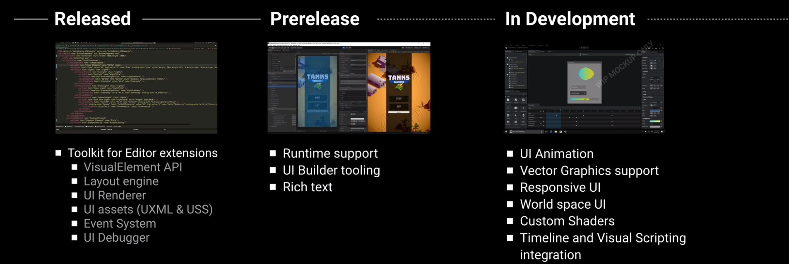
Released
新的保留模式API处理复杂编辑器绘制，方法和层级样式分离，使用UXML资产文件声明你的层级和样式，UXML文件是定义用户界面逻辑结构的文本文件。 UXML文件中使用的格式灵感来自HTML(超文本标记语言)、XAML(可扩展应用程序标记语言)和XML(可扩展标记语言)，UXMl资产有助于复用
- VisualElement API
- Layout engine
- UI Renderer
- UI assets(UXML & USS)
- Event System
- UI Debugger
Prerelease
强大的UI Builder工具提供更友好的UI界面创作
- Runtime support
- UI Builder tooling
- Rich text
In Development
轻松创建高动态用户交互的能力，支持高级CSS特性，如变换，动画，渐变，滤镜，支持矢量绘图
- UI Animation
- Vector Graphics support
- Responsive UI
- World space UI
- Custom Shaders
- Timeline and Visual Scripting integration
Samrt Design & Creation
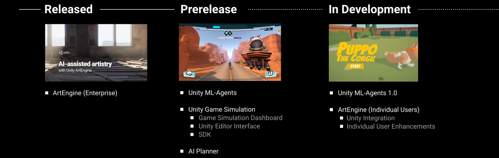
Released
给大型工作室，发布了ArtEngine工具，使用Creative AI的内容创建工具打造基于真实世界世界数据的超现实PBR材质，帮助缩小高速增长的内容需求和当前有限的效果生产能力
- ArtEngine
Prerelease
Unity Game Simulation云模拟服务，AI Planner智能规划，AI Planner程序包可以生成用于最佳方案的代理AI，故事情节生成/管理，游戏/模拟验证，教程创建，自动化测试等的最佳计划。 软件包中提供了通用计划程序框架，创作工具和计划可视化程序。Unity ML-Agents深度学习用来进行部署，以控制NPC行为，自动化测试，评估设计决策
- Unity ML-Agents
- Unity Game Simulation
- AI Planner
In Development
- Unity ML-Agents 1.0
- ArtEngine
Audio & Video
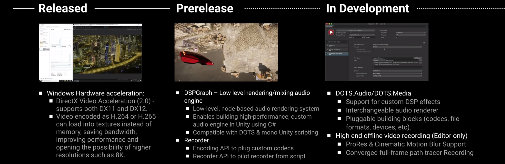
Released
window硬件加速
- Windows Hardware acceleration
Prerelease
低级渲染和和声引擎，录制器
- DSPGraph - Low level rendering/mising audio engine
- Recorder
In Development
DOTS媒体，离线视频录制器
- DOTS.Audio/DOTS/Media
- High end offline video recording
Camera Design
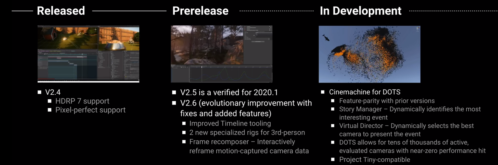
Released
- HDRP 7 support
- Pixel-perfect support
Prerelease
- Improved Timeline tooling
- 2 new specialized rigs for 3rd-person
- Frame recomposer
In Development
- Cinemachine for DOTS
Scalable Quality
Working with assets
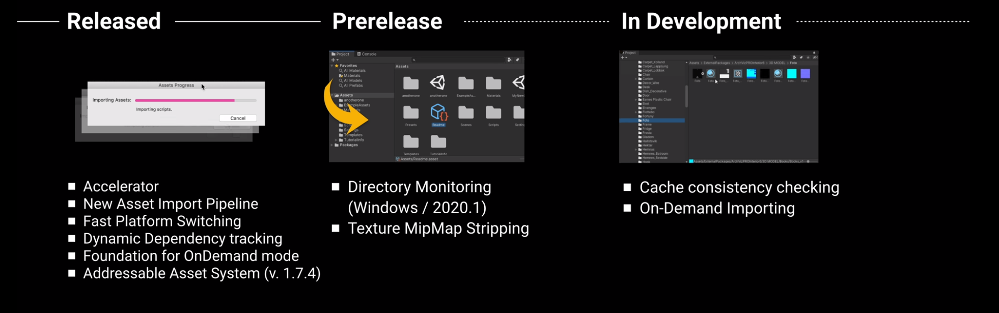
Released
全新资源导入管线，按需导入，更快
- Accelerator（局域网缓存服务器）
- New Asset Import Pipline
- Fast Platform Switching
- Dynamic Dependency tracking
- Foundation for OnDemand mode
- Addressable Asset System
Prerelease
系统API监听替代全部扫描获得更快的资产刷新，大大减轻任务切换痛苦
- Director Monitoring
- Texture MipMap Stripping
In Development
按需导入，合并构建管线和导入管线共享缓存数据
- Cache consistenct checking
- On-Demand Importing
Universal Rendering
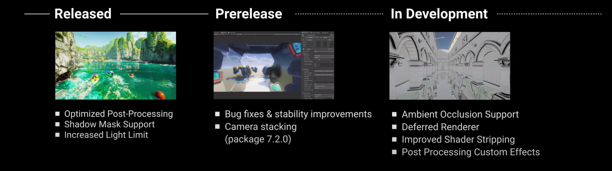
通用渲染管线
Released
- Optimized Post-Processing 优化后处理
- Shadow Mask Support 阴影遮罩支持
- Increased Light Limit 对灯光的限制减少
Prerelease
多相机
- Camera stacking
In Development
使用通用渲染管道替换默认渲染器
- Ambient Occlusion Support 环境光遮罩支持
- Deferred Renderer 延迟渲染
- Imporoved Shader Stripping 改善着色器剔除
- Post Processing Custom Effects 自定义后处理效果
High Definition Rendering
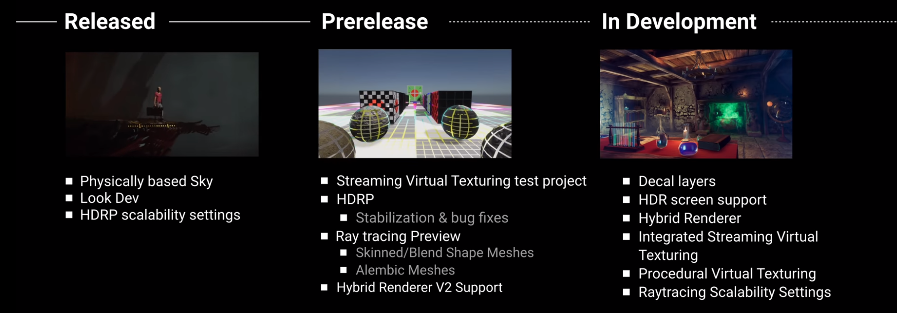
Released
- Physically based Sky
- Look Dev
- HDRP scalability settiongs
Prerelease
- Streaming Virtual Texturing test project
- Ray tracing
- Hybird Renderer V2 Support
In Development
- Decal layers
- HDR screen support
- Hybrid Renderer
- Integrated Streraming Virtual Texturing
- Procedural Virtual Texturing
- Raytracing Scalability Settings
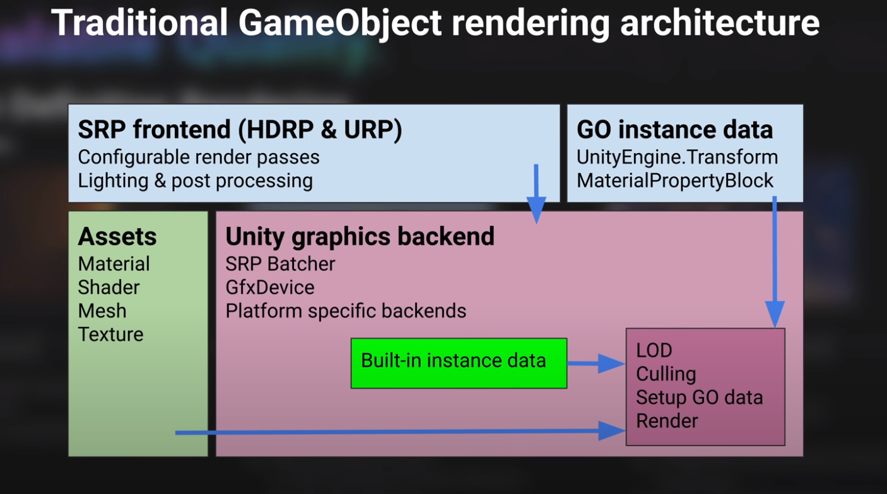 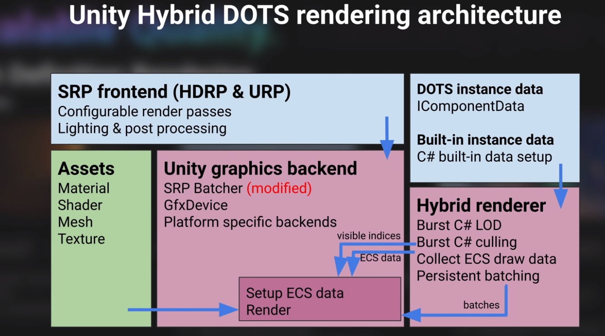 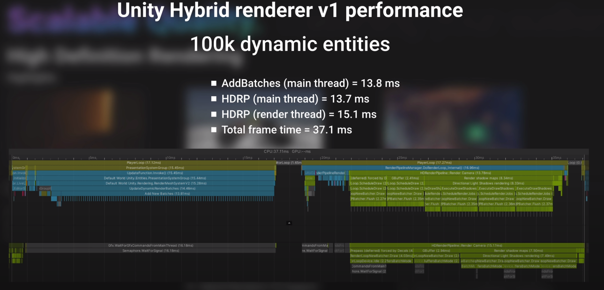 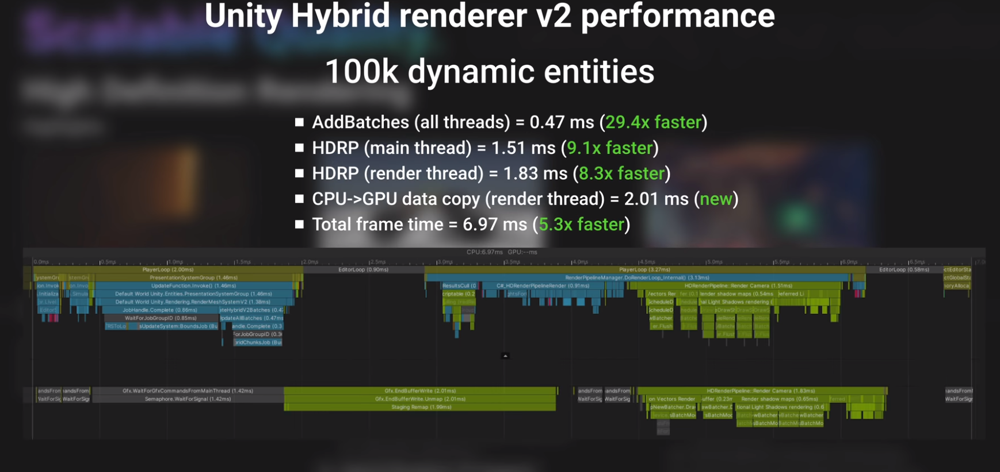
Physics
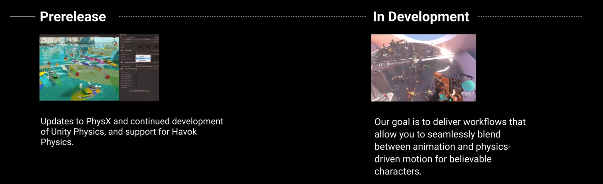 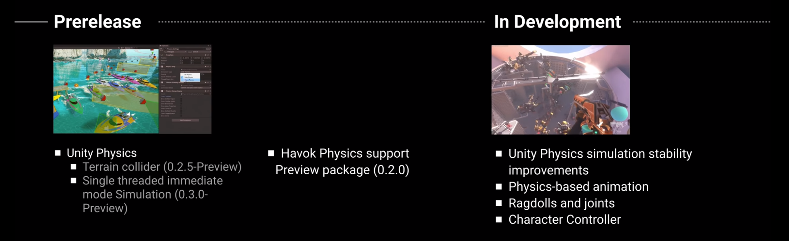
Released
- Unity Physics
- Terrain collider
- Single threded immediate mode Simulation
- Havok Physics support
In Development
- Unity Pyhsics simulation stability improvements
- Physics-based animation
- Ragdolls and joints
- Character Controller
Reaching your audience
Connected Games
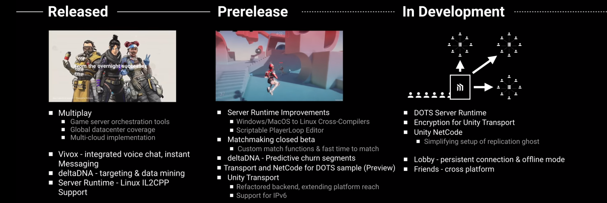
Released
- 多人
- 游戏服务器编排工具
- 全球数据中心覆盖
- 多云实现
- Vivox 继承语音聊天，即时讯息发送
- deltaDNA 目标和数据挖掘
- 服务器运行时支持Linux IL2CPP
Prerelease
- 服务器运行时改进
- Windows/MacOS 到Linux的交叉编译器
- PlayerLoop脚本编辑器
- Matchmaking closed beta
- deltaDNA -Predictive churn segments
- Transport and NetCodfe for DOTS sample
- Unity Transport
- 重构 backend，拓展平台范围
- 支持IPv6
In Development
- DOTS Server Runtime
- Unity Transport 认证
- UnityNetCode
- Lobby -persistent connection & offline mode
- Frineds -cross platform
Mobile Platform
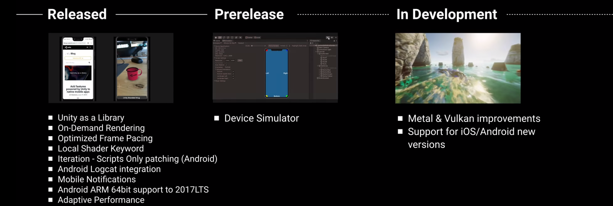
Released
- Unity as a Library
- On-Demand REndering
- Optimized Frame Pacing
- Local Shader Keyword
- Iteration -Script Only patching(Android)
- Android Logcat iintegration
- Mobile Notifications
- Android ARM 64bit support
- Adaptive Performance
Prerelease
- Device Simulator
In Development
- Metal & Vulkan improvements
- Support for IOS/Android new Versions
Project Tiny
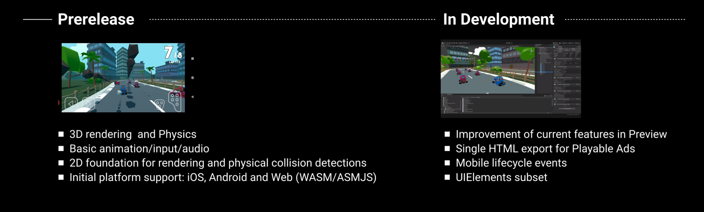
Prerelease
- 3D rendering and Physics
- Basic animation/input/audio
- 2D foundation for rendering and physical collision detections
- initial platform support IOS,Android and Web(WASM/ASMJS)
In Development
- Improvement of current feature in Preview
- Single HTML export for Playable Ads
- Mobile lifecycle events
- UIElements subset
XR Platfroms
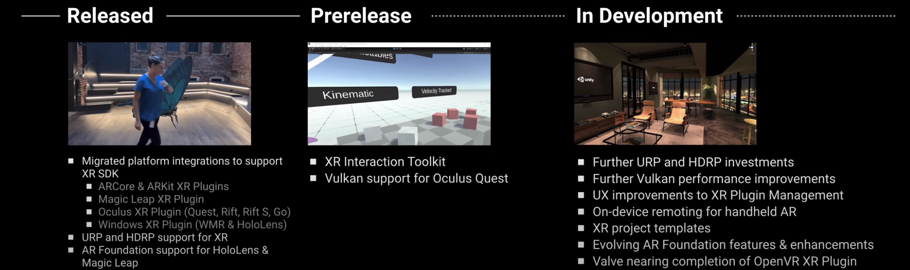